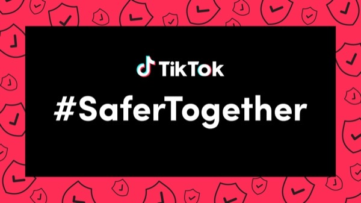
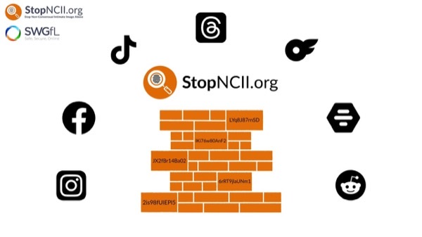
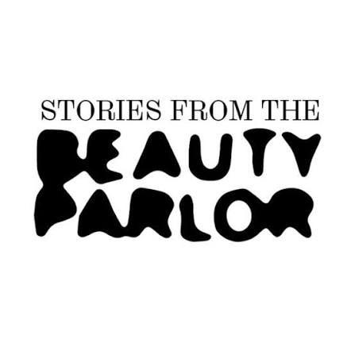
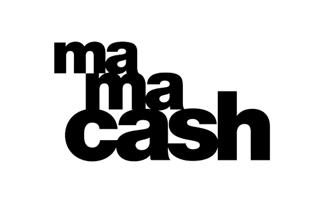
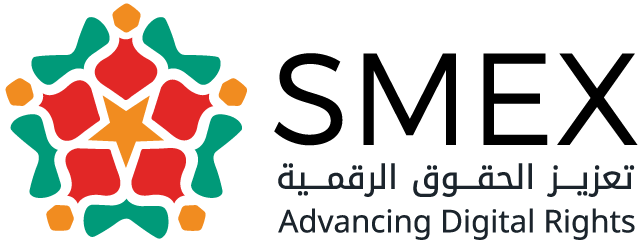

Stronger together.
پێکەوە بەهێزترین.
Bi hev re bihêztir in.
The platforms, funds, and collectives we build with, from online safety to feminist funding.
ئەو پلاتفۆرم، سندوق و گرووپانەی لەگەڵیان کار دەکەین، لە پاراستنی سەلامەتیی ئۆنلاینەوە تا پاڵپشتیی دارایی بۆ ژنان.
Platform, fon û komên ku em bi wan re dixebitin, ji ewlehiya online heta piştgiriya darayî ji bo jinan.

TikTok Safety Partner
هاوبەشی سەلامەتیی تیکتۆک
Hevkarê Ewlehiyê yê TikTokê
We are TikTok's safety partner. We can escalate cases within 24 hours for any content that violates TikTok's policies.
ئێمە هاوبەشی سەلامەتیی تیکتۆکین. دەتوانین هەر ناوەڕۆکێک کە پێچەوانەی یاساکانی تیکتۆک بێت، لە ماوەی ٢٤ کاتژمێردا ڕاستەوخۆ بگەیەنینە تیمی تیکتۆک.
Em hevkarê ewlehiyê yê TikTokê ne. Em dikarin her naveroka ku polîtîkayên TikTokê binpê dike, di nava 24 saetan de rasterast bigihînin tîma TikTokê.

StopNCII
StopNCII
StopNCII
We partner with StopNCII to help and support people whose intimate images or videos have been shared without their consent.
لەگەڵ StopNCII هاوبەشین بۆ یارمەتیدانی ئەو کەسانەی وێنە یان ڤیدیۆی تایبەتیان بەبێ ڕەزامەندیی خۆیان بڵاو کراوەتەوە.
Em bi StopNCII re hevkar in da ku alîkariya wan kesan bikin ku wêne an vîdyoyên wan ên taybet bêyî razîbûna wan hatine belavkirin.

Stories from the Beauty Parlor
Stories from the Beauty Parlor
Stories from the Beauty Parlor
Together we made a podcast episode on Southern Kurdistan, showing the economic systems that affect women the most.
پێکەوە ئەڵقەیەکی پۆدکاستمان دەربارەی باشووری کوردستان ئامادە کرد، کە ئەو سیستەمە ئابوورییانە نیشان دەدات کە زۆرترین کاریگەرییان لەسەر ژنان هەیە.
Me bi hev re beşeke podcastê li ser Başûrê Kurdistanê amade kir, ku pergalên aborî yên herî zêde bandorê li jinan dikin nîşan dide.

Mama Cash
Mama Cash
Mama Cash
JusticeNow's co-directors are Mama Cash subgrantees, building a new fund dedicated entirely to Kurdish women.
بەڕێوەبەرە هاوبەشەکانی دادپەروەری ئێستا بەخشینیان لە Mama Cash وەرگرتووە، بۆ دامەزراندنی سندوقێکی نوێ کە تەنها بۆ ژنانی کورد تەرخان کراوە.
Hev-rêveberên JusticeNow ji Mama Cash piştgiriya darayî wergirtine, ji bo avakirina fonekeke nû ku bi tevahî ji bo jinên Kurd hatiye veqetandin.

SMEX
SMEX
SMEX
From 2024 to 2025, we were a SMEX subgrantee, working where women's health and the digital world meet.
لە ساڵانی ٢٠٢٤ و ٢٠٢٥دا بەخشینمان لە SMEX وەرگرت، بۆ کارکردن لەسەر پەیوەندیی نێوان تەندروستیی ژنان و جیهانی دیجیتاڵی.
Di salên 2024 û 2025an de me ji SMEX piştgiriya darayî wergirt, ji bo xebata li ser têkiliya navbera tenduristiya jinan û cîhana dîjîtal.
Harmful content online? We can help.
لە ئۆنلاین ڕووبەڕووی ناوەڕۆکی زیانبەخش بوویتەوە؟ دەتوانین یارمەتیت بدەین.
Li online rastî naveroka zirardar hatî? Em dikarin alîkariya te bikin.
If someone shared your intimate images without consent, or you've found content on TikTok that breaks its rules, write to us. We'll help you report it.
ئەگەر کەسێک وێنە تایبەتییەکانی تۆی بەبێ ڕەزامەندیت بڵاو کردبێتەوە، یان ناوەڕۆکێکت لە تیکتۆک بینیبێت کە پێچەوانەی یاساکانییەتی، نامەمان بۆ بنێرە. یارمەتیت دەدەین ڕاپۆرتی بکەیت.
Heke kesekî wêneyên te yên taybet bêyî razîbûna te belav kiribin, an te li TikTokê naverokek dîtibe ku qaîdeyên wê binpê dike, ji me re binivîse. Em ê alîkariya te bikin ku tu wê rapor bikî.